生信中常见的数据文件格式¶

TCGA** | GEO | 文献阅读 | 数据库** **| **理论知识
R语言** |**** Bioconductor | 服务器与**Linux
前面我们介绍了各种测序技术的原理：illumina、Sanger、第三代和第四代测序技术原理，我们测序得到的是带有质量值的碱基序列fastq格式，参考基因组是fasta格式。⽤⽐对⼯具把fastq格式的序列回帖到对应的fasta格式的参考基因组序列，就可以产⽣sam格式的⽐对⽂件。把sam格式的⽂本⽂件压缩成⼆进制bam⽂件可以节省空间。如果是记录某些位点或者区域碱基的变化，就是VCF⽂件格式。如果对参考基因组上⾯的各个区段标记它们的性质，⽐如哪些区域是外显⼦，内含⼦， UTR等等，这就是gtf/gff格式。如果只是为了单纯描述某个基因组区域，就是bed格式⽂件，记录染⾊体号以及起始终⽌坐标，正负链即可。
转录组分析流程：
转录组分析 | 使用trim-galore去除低质量的reads和adaptor
转录组分析 | 使用SAMtools将SAM文件转换为BAM文件、排序、建立索引
转录组分析 | 使用RSeQC软件对生成的BAM文件进行质控
1.fastq文件¶
FASTQ是基于文本的，保存生物序列（通常是核酸序列）和其测序质量信息的标准格式。其序列以及质量信息都是使用一个ASCII字符标示，最初由Sanger开发，目的是将FASTA序列与质量数据放到一起，目前已经成为高通量测序结果的事实标准。
FASTQ文件中每个序列通常有四行：
序列标识以及相关的描述信息，以‘@’开头；
第二行是序列
第三行以‘+’开头，后面是序列标示符、描述信息，或者什么也不加
第四行，是质量信息，和第二行的序列相对应，每一个序列都有一个质量评分，根据评分体系的不同，每个字符的含义表示的数字也不相同。
例如：
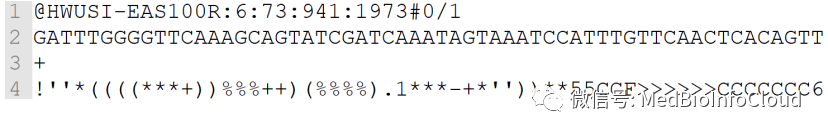
质量评分指的是一个碱基的错误概率的对数值。其最初在Phred拼接软件中定义与使用，对于每个碱基的质量编码标示，不同的软件采用不同的方案，目前有5种方案：- Sanger，Phred quality score，值的范围从0到92，对应的ASCII码从33到126，但是对于测序数据（raw read data）质量得分通常小于60，序列拼接或者mapping可能用到更大的分数。
- Solexa/Illumina 1.0, Solexa/Illumina quality score，值的范围从-5到63，对应的ASCII码从59到126，对于测序数据，得分一般在-5到40之间；
- Illumina 1.3+，Phred quality score，值的范围从0到62对应的ASCII码从64到126，低于测序数据，得分在0到40之间；
- Illumina 1.5+，Phred quality score，但是0到2作为另外的标示；
- Illumina 1.8+ ，Phred quality score。
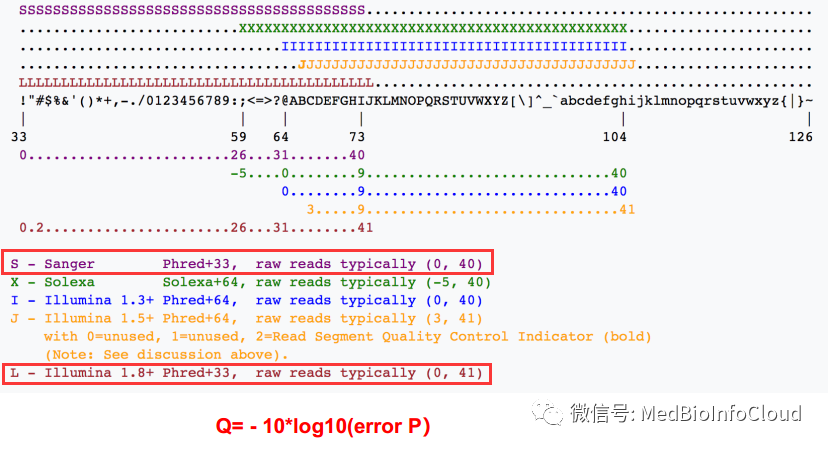
举个犊子，假设质量信息是5，这个5看成字符，不要看成数字，那么他对应的十进制数就是53，如果使用的是Sanger测序，那么质量评分采用的就是Phred+33的形式，那么Q = 53-33=20=-10lg(errorP)，所以errorP = 0.01。也就计算出错误率啦，就便于我们进行质控。每一个碱基都有一个质量评分，所以第2行和第4行的位数是相同的。
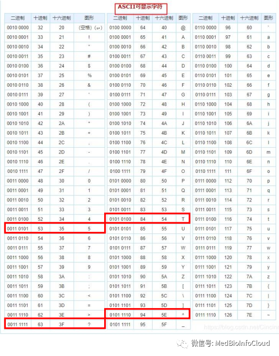
2.fasta文件
FASTA格式是一种用于表示核苷酸序列或多肽序列的文本格式。其中碱基对或氨基酸用单个字母来表示，且允许在序列前添加序列名及注释。该格式已成为生物信息学领域的一项标准。
FASTA文件各行记录信息如下：
第一行是由大于号">"开头的任意文字说明，用于序列标记，为了保证后续分析软件能够区分每条序列，单个序列的标识必须是唯一的。
从第二行开始为序列本身，只允许使用既定的核苷酸或氨基酸编码符号。通常核苷酸符号大小写均可，而氨基酸常用大写字母。注意有些程序对大小写有明确要求。一般每行60～80个字母。
核苷酸序列：
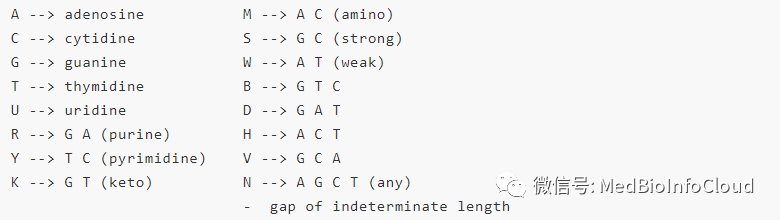
氨基酸序列：
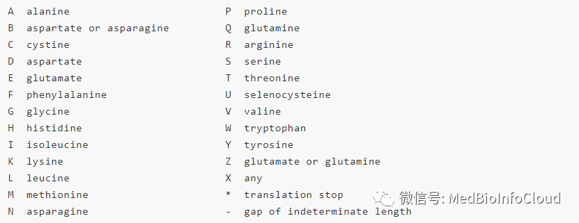
fasta格式还是比较常见的，比如我们在NCBI查看基因的的时候通常就有fasta格式genebank格式。下面就是fasta格式的案例：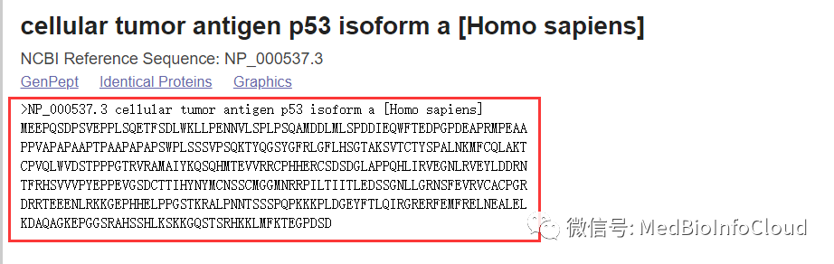
3.SAM/BAM当我们测序得到的fastq数据map【转录组分析 | 使用Hisat2进行序列比对】到基因组之后，会得到一个以sam或bam【转录组分析 | 使用SAMtools将SAM文件转换为BAM文件、排序、建立索引】为扩展名的文件。这里，SAM的全称是sequence alignment/map format。而BAM就是SAM的二进制文件，也就是压缩格式的sam文件。
SAM格式文件包括头部注释部分和比对结果部分，头部分为’’可选部分’’。头部分位于比对部分之前，以“@”开头。比对部分有11列是固定的，其他多列可选。
（1）Header （标头注释部分）¶
@HD VN:1.0 SO:coordinate @SQ SN:chr1 LN:249250621 @SQ SN:chr10 LN:135534747 @SQ SN:chr11 LN:135006516 ... @SQ SN:chrY LN:59373566 @PG ID:TopHat VN:2.0.8b CL:/home/hpages/tophat-2.0.8b.Linux_x86_64/tophat --mate-inner-dist 150 --solexa-quals --max-multihits 5 --no-discordant --no-mixed --coverage-search --microexon-search --library-type fr-unstranded --num-threads 2 --output-dir tophat2_out/ERR127306 /home/hpages/bowtie2-2.1.0/indexes/hg19 fastq/ERR127306_1.fastq fastq/ERR127306_2.fastq
- @HD：说明VN的版本以及比对有无排列顺序，这个例子没有排序。
- @SQ：参考序列目录。SN：参考序列名字。LN：参考序列长度。
- @PG：使用的比对程序名。
（2）比对结果部分¶
例如这样的：
E00514:173:H3C3JCCXY:4:1124:12398:67234 337 Chr00 32904 0 150M Chr09 33498107 0 TCAATTTCACTTGAAGCTTACTTGTAGTTTCAGGCTTGGTCAAGCGCGATACAAACCATGTAGTAGGAGTCCTCCAAGTCGCCAAGCTAGGGGATCTGCTGAAAGAGGTGACAGACAAGGTAAGCAATCAGAGCTCTAAGCAATCAGTCC iieiiiii`eiiiiiiiiiiiiiiieiiiiiiiieiiiiiiiiiiiiiiiiiiiiieiiiiiiiiiiiiieiiiiiiiiiiiiiiiiiiiiiiiiiiiiiiiiiiiiiiiiiiiiiiiiiiiieiiiiiiiii`iiieeieieeieee`` AS:i:-6 XN:i:0 XM:i:1 XO:i:0 XG:i:0 NM:i:1 MD:Z:136C13 YT:Z:UU NH:i:8 CC:Z:Chr10 CP:i:18604313 HI:i:0 RG:Z:J36CK1E00514:173:H3C3JCCXY:4:1124:12398:67234 369 Chr00 32904 0 150M Chr16 2469225 0 TCAATTTCACTTGAAGCTTACTTGTAGTTTCAGGCTTGGTCAAGCGCGATACAAACCATGTAGTAGGAGTCCTCCAAGTCGCCAAGCTAGGGGATCTGCTGAAAGAGGTGACAGACAAGGTAAGCAATCAGAGCTCTAAGCAATCAGTCC iieiiiii`eiiiiiiiiiiiiiiieiiiiiiiieiiiiiiiiiiiiiiiiiiiiieiiiiiiiiiiiiieiiiiiiiiiiiiiiiiiiiiiiiiiiiiiiiiiiiiiiiiiiiiiiiiiiiieiiiiiiiii`iiieeieieeieee`` AS:i:-6 XN:i:0 XM:i:1 XO:i:0 XG:i:0 NM:i:1 MD:Z:136C13 YT:Z:UU NH:i:8 CC:Z:Chr10 CP:i:18604313 HI:i:2 RG:Z:J36CK1E00514:173:H3C3JCCXY:4:1124:12398:67234 369 Chr00 32904 0 150M Chr16 29515410 0 TCAATTTCACTTGAAGCTTACTTGTAGTTTCAGGCTTGGTCAAGCGCGATACAAACCATGTAGTAGGAGTCCTCCAAGTCGCCAAGCTAGGGGATCTGCTGAAAGAGGTGACAGACAAGGTAAGCAATCAGAGCTCTAAGCAATCAGTCC iieiiiii`eiiiiiiiiiiiiiiieiiiiiiiieiiiiiiiiiiiiiiiiiiiiieiiiiiiiiiiiiieiiiiiiiiiiiiiiiiiiiiiiiiiiiiiiiiiiiiiiiiiiiiiiiiiiiieiiiiiiiii`iiieeieieeieee`` AS:i:-6 XN:i:0 XM:i:1 XO:i:0 XG:i:0 NM:i:1 MD:Z:136C13 YT:Z:UU NH:i:8 CC:Z:Chr10 CP:i:18604313 HI:i:4 RG:Z:J36CK1E00514:173:H3C3JCCXY:4:1124:12398:67234 369 Chr00 32904 0 150M Chr17 31040767 0 TCAATTTCACTTGAAGCTTACTTGTAGTTTCAGGCTTGGTCAAGCGCGATACAAACCATGTAGTAGGAGTCCTCCAAGTCGCCAAGCTAGGGGATCTGCTGAAAGAGGTGACAGACAAGGTAAGCAATCAGAGCTCTAAGCAATCAGTCC iieiiiii`eiiiiiiiiiiiiiiieiiiiiiiieiiiiiiiiiiiiiiiiiiiiieiiiiiiiiiiiiieiiiiiiiiiiiiiiiiiiiiiiiiiiiiiiiiiiiiiiiiiiiiiiiiiiiieiiiiiiiii`iiieeieieeieee`` AS:i:-6 XN:i:0 XM:i:1 XO:i:0 XG:i:0 NM:i:1 MD:Z:136C13 YT:Z:UU NH:i:8 CC:Z:Chr10 CP:i:18604313 HI:i:6 RG:Z:J36CK1E00514:173:H3C3JCCXY:4:1212:19025:24532 409 Chr00 33538 0 150M * 0 0 GATTCCAAGTGCTGACTGATTGCTCTCTTTCTCCTTGTCTTGCAGGTAAGAACAAGGCCAAAGGAAAAGACAGGGAAAAAACATGAAATGAGATACTCTTGCTTTTAACCCTGATGATATGAGATATTCTTGCTCTAGTATAGCTTGTTT ii`e`ei[iiiiiiiiiiiiie[ieeieieiiiiieiiiiiiiiiiiiiiiiiiiiiiiiiiiiiiiiiiiiiiiiiiiiiiiiiiiiiiiiiiiiiiiiiiiiiiiiiiiiiiiiiiiiiiiiiiiiiiiiiiiiiiiiiiiiieee`` AS:i:-12 XN:i:0 XM:i:2 XO:i:0 XG:i:0 NM:i:2 MD:Z:52T33T63 YT:Z:UU NH:i:20 CC:Z:Chr01 CP:i:11331871 HI:i:0 RG:Z:J36CK1
字段之间也就是列之间由Tab隔开，每一字段具体含义参考下图：
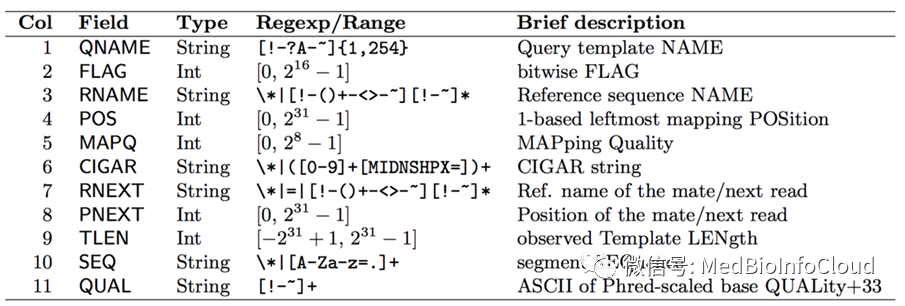
- qname：测序的reads的名称；
- Flag：提供了一个比对文件的信息，比对文件可以设置或取消flag，flag整数是多个flag的同时表示。表示比对的结果，由数字表示，不同的数值含义不同：
- 1 ：代表这个序列采用的是PE双端测序
- 2：代表这个序列和参考序列完全匹配，没有错配和插入缺失
- 4：代表这个序列没有mapping到参考序列上
- 8：代表这个序列的另一端序列没有比对到参考序列上，比如这条序列是R1,它对应的R2端序列没有比对到参考序列上
- 16：代表这个序列比对到参考序列的负链上
- 32 ：代表这个序列对应的另一端序列比对到参考序列的负链上
- 64 ：代表这个序列是R1端序列， read1;
- 128 : 代表这个序列是R2端序列，read2；
- 256：代表这个序列不是主要的比对，一条序列可能比对到参考序列的多个位置，只有一个是首要的比对位置，其他都是次要的
- 512：代表这个序列在QC时失败了，被过滤不掉了（# 这个标签不常用）
- 1024: 代表这个序列是PCR重复序列（#这个标签不常用）
- 2048: 代表这个序列是补充的比对（#这个标签具体什么意思，没搞清楚，但是不常用。
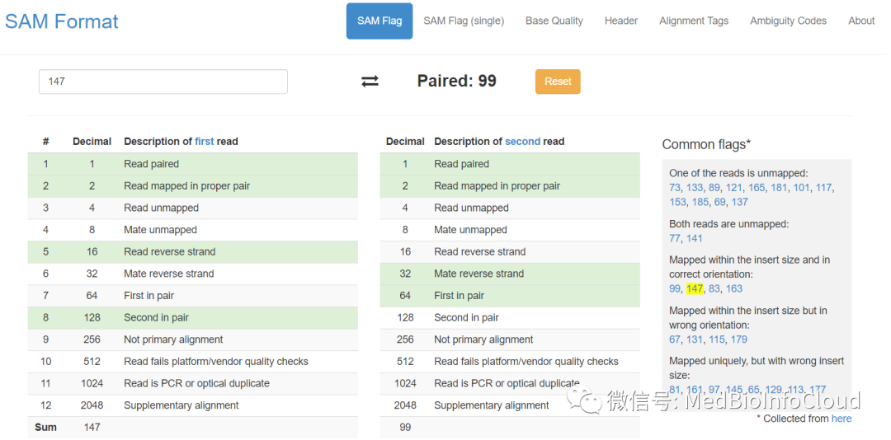
具体还可以参考官网：https://www.samformat.info/sam-format-flag
- rname：map到参考基因组后的染色体/序列/ contig的名称；
- contig：拼接软件基于reads之间的overlap区，拼接获得的序列称为Contig（重叠群）
- strand：比对的链；
- pos：比对的最左边部分的坐标；
- mapq：比对的映射质量；
- CIGAR：CIGAR字符串，一个数字与字母交替构成的字符串，标记了这段reads不同位置的match情况。
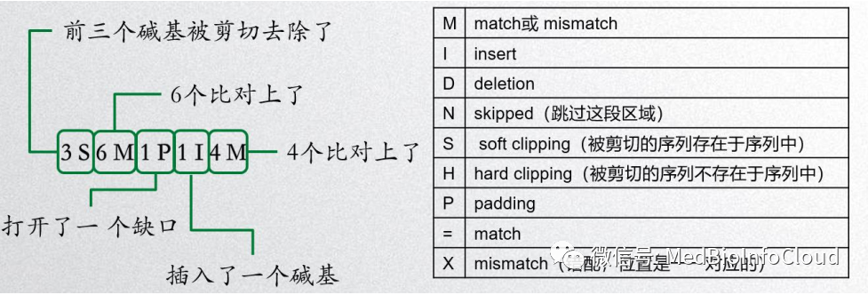
- qwidth：读段的长度；
- RNEXT：双末端测序中下一个reads比对的参考系列的名称，如果没有则用 " * " 表示，如果和前一个reads比对到同一个参考序列则用" = "表示；
- PNEXT：下一个reads比对到参考序列上的位置，如果没有则用0表示；
- TLEN：序列模板的长度；
- seq：比对的实际顺序；
- qual：比对的质量字符串(fasta文件中的质量得分)；
- cigar中会包含数字，代表了特定match持续了多少nt；以及不同的字符，代表了不同的match情况。如36M表示它没有插入或删除。
由于sam格式的文件通常都非常大，所以为了节省存储空间而将sam转换为二进制格式以便于存储，也就是bam文件。sam/bam文件可以由特定的一些软件（比如samtools）来处理的，包括格式互转、排序、建立索引等操作。
4.GTF和GFF文件¶
GTF全称是Gene transfer format，用于储存基因结构信息，总共有9列。关于gtf文件，我在文章：生信中各种ID转换中就已经有所应用。我之前在TCGA数据库差异分析的文章中，也是通过gtf文件进行ID转换的。

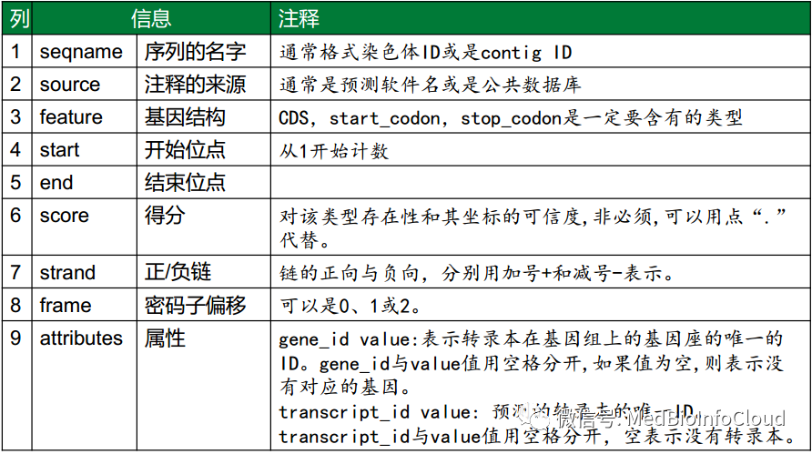
GFF全称为general feature format，这种格式主要是用来注释基因组。描述了基因组上各种特征的区间信息，包括染色体，基因，转录本等。GFF文件本质上是一个\t分隔的，和gtf文件差不多，共9列的纯文本文件。
NC_000010.11 BestRefSeq%2CGnomon gene 35126830 35212958 . + . ID=gene27850;Dbxref=GeneID:1390,HGNC:HGNC:2352,MIM:123812;Name=CREM;description=cAMP responsive element modulator;gbkey=Gene;gene=CREM;gene_biotype=protein_coding;gene_synonym=CREM-2,hCREM-2,ICERNC_000010.11 BestRefSeq mRNA 35126841 35179847 . + . ID=rna82191;Parent=gene27850;Dbxref=GeneID:1390,Genbank:NM_001881.3,HGNC:HGNC:2352,MIM:123812;Name=NM_001881.3;gbkey=mRNA;gene=CREM;product=cAMP responsive element modulator%2C transcript variant 2;transcript_id=NM_001881.3NC_000010.11 BestRefSeq exon 35126841 35127193 . + . ID=id995818;Parent=rna82191;Dbxref=GeneID:1390,Genbank:NM_001881.3,HGNC:HGNC:2352,MIM:123812;gbkey=mRNA;gene=CREM;product=cAMP responsive element modulator%2C transcript variant 2;transcript_id=NM_001881.3NC_000010.11 BestRefSeq exon 35148368 35148491 . + . ID=id995819;Parent=rna82191;Dbxref=GeneID:1390,Genbank:NM_001881.3,HGNC:HGNC:2352,MIM:123812;gbkey=mRNA;gene=CREM;product=cAMP responsive element modulator%2C transcript variant 2;transcript_id=NM_001881.3NC_000010.11 BestRefSeq exon 35178889 35178986 . + . ID=id995820;Parent=rna82191;Dbxref=GeneID:1390,Genbank:NM_001881.3,HGNC:HGNC:2352,MIM:123812;gbkey=mRNA;gene=CREM;product=cAMP responsive element modulator%2C transcript variant 2;transcript_id=NM_001881.3NC_000010.11 BestRefSeq exon 35179134 35179847 . + . ID=id995821;Parent=rna82191;Dbxref=GeneID:1390,Genbank:NM_001881.3,HGNC:HGNC:2352,MIM:123812;gbkey=mRNA;gene=CREM;product=cAMP responsive element modulator%2C transcript variant 2;transcript_id=NM_001881.3NC_000010.11 BestRefSeq CDS 35148372 35148491 . + 0 ID=cds57086;Parent=rna82191;Dbxref=CCDS:CCDS7184.1,GeneID:1390,Genbank:NP_001872.3,HGNC:HGNC:2352,MIM:123812;Name=NP_001872.3;Note=isoform 2 is encoded by transcript variant 2;gbkey=CDS;gene=CREM;product=cAMP-responsive element modulator isoform 2;protein_id=NP_001872.3NC_000010.11 BestRefSeq CDS 35178889 35178986 . + 0 ID=cds57086;Parent=rna82191;Dbxref=CCDS:CCDS7184.1,GeneID:1390,Genbank:NP_001872.3,HGNC:HGNC:2352,MIM:123812;Name=NP_001872.3;Note=isoform 2 is encoded by transcript variant 2;gbkey=CDS;gene=CREM;product=cAMP-responsive element modulator isoform 2;protein_id=NP_001872.3NC_000010.11 BestRefSeq CDS 35179134 35179329 . + 1 ID=cds57086;Parent=rna82191;Dbxref=CCDS:CCDS7184.1,GeneID:1390,Genbank:NP_001872.3,HGNC:HGNC:2352,MIM:123812;Name=NP_001872.3;Note=isoform 2 is encoded by transcript variant 2;gbkey=CDS;gene=CREM;product=cAMP-responsive element modulator isoform 2;protein_id=NP_001872.3
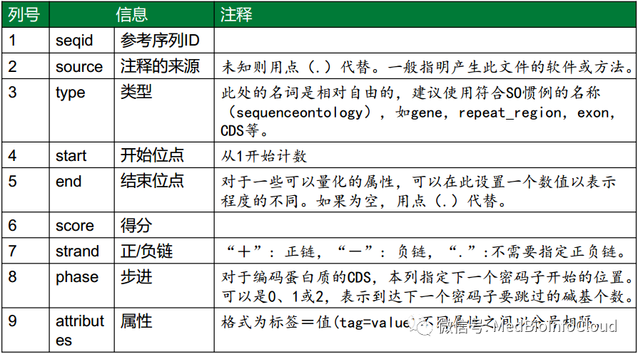
- 第一列是seqid, 代表序列ID, 通常是染色体的ID, 每条染色体拥有一个唯一的ID。
- 第二列是source, 代表基因结构的来源，可以是数据库的名称，比如来自genebank数据库，也可以是软件的名称，比如用GeneScan软件预测得到，当然，也可以为空，用.点号填充。
- 第三列是type, 代表区间对应的特征类型，比如gene, exon等。
- 第四列是start, 代表区间的起始位置。
- 第四列是end, 代表区间的终止位置。
- 第六列是score, 软件提供了统计值，如果没有，就用.填充。
- 第七列是strand, 代表正负链的信息, +表示正链，-表示负链，?表示不清楚正负链的信息，当正负链信息没有意义时，可以用.填充。
- 第八列是phase，当描述的是CDS区间信息时，需要指定翻译时开始的位置，取值范围包括0,1,2。
- 第九列是attributes, 表示属性，每种属性采用key=value 的形式，多个属性之间用;分号分隔。
gtf与gff的比较
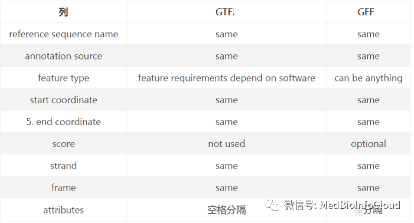
5.BED文件
BED文件每行至少包括chrom，chromStart，chromEnd三列必选;另外还可以添加额外的9列可选，这些列的顺序是固定的。
chr3 124792319 124792562 ENSG00000276626 RF00100 -chr1 92700819 92700934 ENSG00000201317 RNU4-59P -chr14 100951856 100951933 ENSG00000200823 SNORD114-2 +chr22 45200954 45201019 ENSG00000221598 MIR1249 -chr1 161699506 161699607 ENSG00000199595 RF00019 +
必选的三列：
- chrom - 染色体的名称（例如chr3，chrY，chr2_random）或支架（例如scaffold10671）。
- chromStart- 染色体或支架中特征的起始位置，染色体中的第一个碱基编号为0。
- chromEnd- 染色体或支架中特征的结束位置。所述 chromEnd碱没有包括在特征的显示。
例如，染色体的前100个碱基定义为chromStart = 0，chromEnd = 100，并跨越编号为0-99的碱基。
9个可选的BED字段：
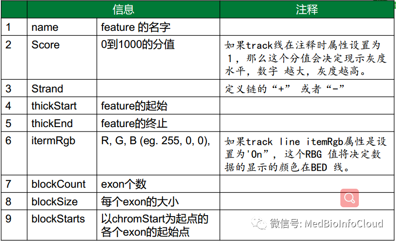
- name - 定义BED行的名称。当轨道打开到完全显示模式时，此标签显示在Genome浏览器窗口中BED行的左侧，或者在打包模式下直接显示在项目的左侧。
- score - 得分在0到1000之间。如果此注释数据集的轨迹线useScore属性设置为1，则得分值将确定显示此要素的灰度级别（较高的数字=较深的灰色）。
- 此表显示 Genome Browser将BED分数值转换为灰色阴影：
- strand - 定义strand。要么“.” （=无绞线）或“+”或“ - ”。
- thickStart- 绘制特征的起始位置（例如，基因显示中的起始密码子）。当没有厚部分时，thickStart和thickEnd通常设置为chromStart位置。
- thickEnd - 绘制特征的结束位置（例如基因显示中的终止密码子）。
- itemRgb- R，G，B形式的RGB值（例如255,0,0）。如果轨道行 itemRgb属性设置为“On”，则此RBG值将确定此BED行中包含的数据的显示颜色。注意：建议使用此属性的简单颜色方案（八种颜色或更少颜色），以避免压倒Genome浏览器和Internet浏览器的颜色资源。
- blockCount- BED行中的块（外显子）数。
- blockSizes- 块大小的逗号分隔列表。此列表中的项目数应与blockCount相对应。
- blockStarts - 以逗号分隔的块开始列表。应该相对于chromStart计算所有 blockStart位置。此列表中的项目数应与blockCount相对应。
BED文件与GFF文件的区别与联系：
- 联系 ➢染色体或Contig的ID或编号 ➢ DNA的正负链信息 ➢起始和终止位置数值
- 区别 ➢ BED：起始坐标为0，结束坐标至少是1 ➢ GFF：起始坐标为1，结束坐标至少是1
这里介绍一些处理bed文件的工具。
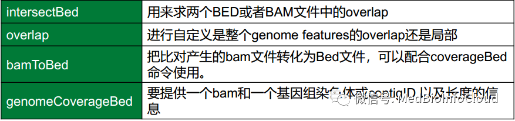
参考资料：
【1】https://mp.weixin.qq.com/s/32H3NkEDEL_m54gl-IAEPg
【2】https://mp.weixin.qq.com/s/TgkLIusOUqPqVZO-aiBdDw
【3】https://mp.weixin.qq.com/s/rZ26i19hiS5ZOqIoqkL1Wg
【4】https://mp.weixin.qq.com/s/2VBb6i9jklh-fSGRAkdENA
【5】https://mp.weixin.qq.com/s/Gon-xYF1Lg93PiirifwQxA
【6】https://mp.weixin.qq.com/s/UvF53mMHXcnhrYxOWO2WEw
【7】https://mp.weixin.qq.com/s/r1flLc1l__HoM2aUYcIxcA
更新: 2021-02-04 16:18:06 原文: https://www.yuque.com/doublehelix/bioinfonotes/xx92kk